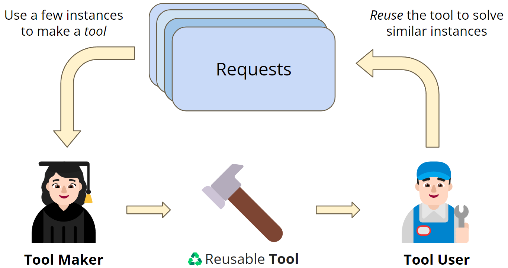
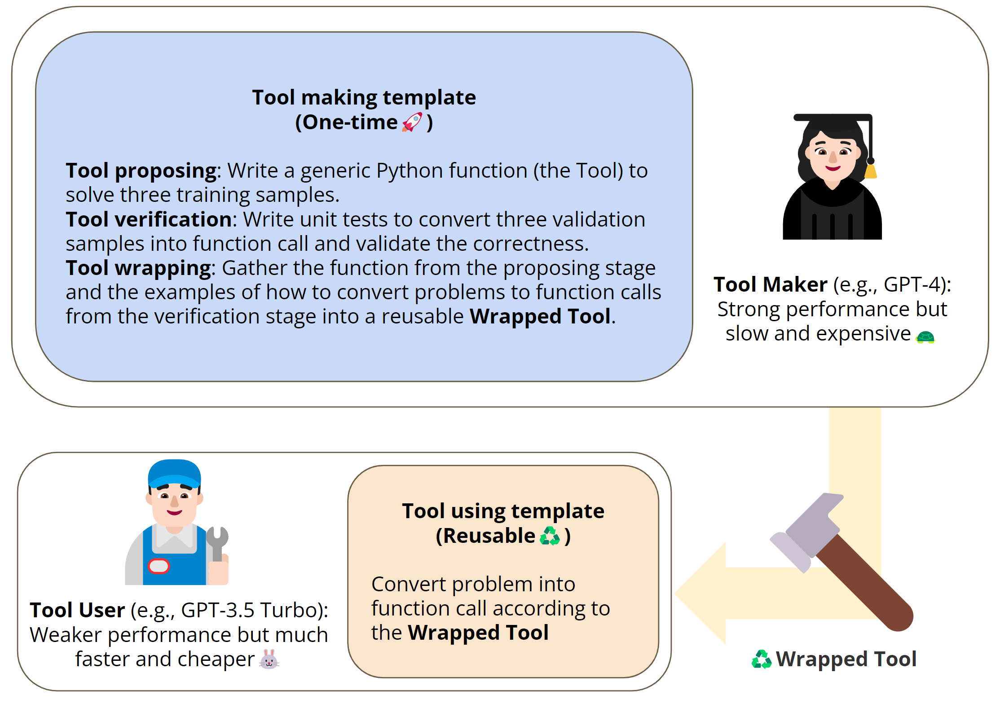
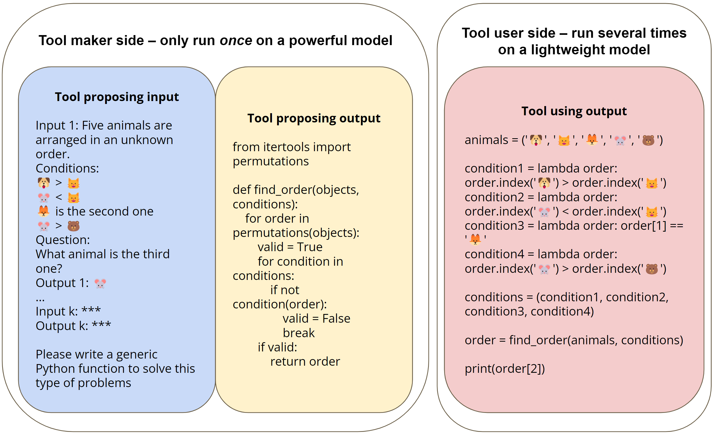
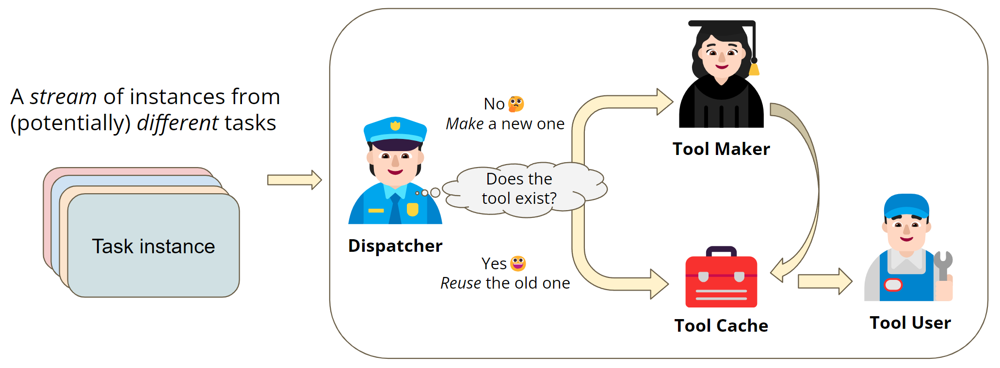

Large Language Models as Tool Makers
这篇论文提出 LATM：让强模型一次性把一类任务抽象成可复用 Python tool，再让弱模型把后续自然语言请求转成函数调用，从而把“推理能力”缓存为功能而不是缓存为文本答案。
1. 研究动机
论文要解决的问题不是“LLM 能否调用工具”，而是“当可用工具不存在时，LLM 能否自己制造一个可复用工具，并把一次昂贵的推理转化成后续多次便宜的函数调用”。这使工具调用从外部 API selection 进一步走向 tool creation。
现有工具增强的限制
ReAct、Toolformer、Chameleon 等方法通常假设已有搜索、计算器、API、Python executor 或其他外部工具。真正的长尾工作流里，最缺的是“刚好适合这类请求”的专用工具。
服务成本问题
复杂任务上 GPT-4 这类强模型更可靠，但每个请求都调用强模型成本高。LATM 把强模型用在一次性的 tool making，把后续大量请求交给轻量 tool user。
缓存粒度问题
传统 LLM cache 多缓存自然语言 response，只能覆盖文本相似请求。LATM 缓存的是功能：只要新请求与旧请求功能同类，就能复用同一个 Python function。
核心成本直觉
若强模型单次成本记为 $C$，弱模型单次成本记为 $c$，论文写作时 $C$ 超过 $15c$。对于同一任务族的 $n$ 个请求，直接用强模型约为：
$$\mathrm{Cost}_{\mathrm{strong}}(n)=nC.$$LATM 需要一次 tool making 成本，再加上每次 tool using 成本：
$$\mathrm{Cost}_{\mathrm{LATM}}(n)=C_{\mathrm{make}}+n(c_{\mathrm{dispatch}}+c_{\mathrm{use}}+c_{\mathrm{exec}}).$$当任务重复出现且 $n$ 足够大时，一次性造工具的成本可以被摊薄。论文没有给出每个实验的实际 token 账单，所以这里的公式是论文成本论证的抽象化表达。
2. 方法：LATM 的建模与流程
LATM 把一类自然语言任务表示为“训练示例到通用 Python 函数”的 program synthesis 问题，再把后续实例表示为“自然语言到函数参数”的 in-context mapping 问题。难的抽象由强模型做，简单的调用由弱模型做。
| 符号 | 含义 | 论文中的实例 |
|---|---|---|
| $\mathcal{T}$ | 一个任务族或功能类别，内部包含许多同类请求。 | Logical Deduction、Tracking Shuffled Objects、Schedule Meeting。 |
| $D_{\mathrm{train}}$ | tool proposing 使用的少量 demonstrations。 | 每个任务 3 个训练样本。 |
| $D_{\mathrm{val}}$ | tool verification 使用的 validation samples。 | 每个任务 3 个验证样本。 |
| $f$ | tool maker 生成的可执行 Python function。 | 排序、搜索排列、模拟交换、栈匹配、区间交集等。 |
| $g_{\phi}$ | tool user 学到的自然语言到函数调用转换器，实际由 prompt + LLM 体现。 | GPT-3.5 Turbo 读取 wrapped tool 后输出函数参数与调用。 |
| $p$ | 后处理函数，把函数返回值转成任务要求的答案格式。 | 多选题中把返回对象映射为 A/B/C/D/E。 |
论文没有定义统一数学符号；上表是对 LATM pipeline 的显式化建模，用于理解和复现。
Tool Proposing
强模型读取 3 个训练 demonstrations，生成一个只依赖 Python 标准库的通用函数。如果函数不可执行，就把错误消息追加到 chat history 后重试。
Tool Verification
强模型用 3 个 validation samples 写 unit tests，并执行验证。若测试失败，论文设定只修正 unit test 中的 function calls，不修改函数本身。
Tool Wrapping
通过验证后，把函数代码与验证阶段产生的“问题转函数调用”示例打包成 wrapped tool，作为 tool user 的 prompt。
Tool Using
弱模型只调用一次 API，把新问题转换为函数调用；Python executor 执行函数，必要时再做答案格式后处理。
从自然语言问题到答案的函数化路径
对于新请求 $x$，tool user 不直接生成完整推理链，而是生成参数化调用 $a=g_{\phi}(x;\mathrm{wrap}(f))$，随后执行：
$$\hat{y}=p(f(a)).$$验证阶段的目标可以写成：
$$\forall (x_j,y_j)\in D_{\mathrm{val}},\quad p(f(g_{\phi}^{\mathrm{test}}(x_j)))=y_j.$$这里 $g_{\phi}^{\mathrm{test}}$ 不是训练出的显式模型，而是 tool maker 在 verification 中生成的 unit-test style 解析代码。它同时起到 correctness check 和 in-context examples 的作用。
为什么 Python function 比 CoT 更适合缓存
CoT 通常绑定到单个实例；Python function 抽象的是任务族的算法。Logical Deduction 中的排列搜索、Tracking Shuffled Objects 中的状态模拟、Dyck Language 中的栈，都能跨实例复用。
关键假设
任务必须能被稳定抽象为可执行函数，且 tool user 能可靠地把自然语言解析成参数。若解析比求解本身更难，或输入空间持续变形，LATM 的优势会明显下降。
Functional Cache 与 dispatcher
在线服务场景中，dispatcher 维护一个工具库 $\mathcal{F}=\{(m_i,f_i)\}_{i=1}^{K}$，其中 $m_i$ 是 API 文档或任务描述，$f_i$ 是对应 tool。对新请求 $x_t$：
$$d_t=\mathrm{Dispatcher}(x_t,\mathcal{F}).$$若 $d_t=i$，系统复用 $f_i$；若 $d_t=\mathrm{unknown}$，则缓存新样本，等收集到足够 demonstrations 后触发 tool maker。
for each incoming request:
decision = dispatcher.select_tool_or_unknown(request, tool_cache)
if decision is existing_tool:
call = tool_user.convert_to_function_call(request, existing_tool)
answer = execute(call)
else:
enqueue_as_new_task_example(request)
if enough_examples_are_ready:
new_tool = tool_maker.create_and_verify(examples)
tool_cache.add(new_tool)3. 实验设计与复现细节
实验检验三个问题：强模型能否造出通用工具；弱模型借助工具是否接近强模型效果；在动态任务流中 dispatcher 能否把请求路由到已有工具或触发新工具。
| 任务 | 来源 | 工具形态 | 核心难点 |
|---|---|---|---|
| Logical Deduction (5) | BigBench | Search over permutations | 把自然语言约束翻译成 lambda constraints。 |
| Tracking Shuffled Objects (5) | BigBench | State simulation | 追踪连续交换后的最终状态。 |
| Dyck Language | BigBench | Stack | 补全括号序列并保持合法嵌套。 |
| Word Sorting | BigBench | Sort | 按字典序排序长词表。 |
| Chinese Remainder Theorem | BigBench | Search / extended Euclidean idea | 从多个余数约束恢复整数。 |
| Schedule Meeting | 作者构造 | Interval intersections | 从两人时间段中找最早可行会议窗口。 |
复现 split：每个数据集 3 个训练样本、3 个验证样本、240 个测试样本。Scheduling Meeting 的时间从 08:00 到 18:00，以 30 分钟为粒度，会议长度随机取 0.5、1、1.5 小时。
模型与 API
tool making 使用 GPT-4 和 GPT-3.5 Turbo 的 ChatCompletion API；tool using 主要用 GPT-3.5 Turbo，并对 GPT-3 系列 Completion API 模型做消融。
温度与重试
tool making 温度设为 0.3，以便失败后重试；tool using 温度设为 0.0。tool proposing 和 tool verification 的最大 retry 次数均为 3。
Prompt 来源
Appendix C 给出 tool maker、verifier、wrapper、dispatcher 的 prompt 框架；Appendix D 展示每个任务的 wrapped tool 示例。
复现时需要额外核对
论文没有给出确切 model snapshot、随机种子、每次 API 调用的 token 统计、硬件环境，也没有在正文列出完整测试集构造脚本。代码仓库可补齐一部分工程细节，但严格复现实验数值时仍要记录 API 版本漂移。
4. 实验结果与核心结论
最关键结论是：GPT-4 造出的工具能显著提升 GPT-3.5 Turbo 在算法型任务上的表现，尤其是原本 CoT 几乎失败的 Chinese Remainder Theorem 和 Scheduling Meeting。GPT-4 自己使用 LATM 不总是优于 GPT-4 CoT，但 LATM 的成本目标本来就是让弱模型接近强模型。
| Tool user | Method | Logical Deduction | Tracking Objects | Dyck | Word Sorting | CRT | Schedule | Cost on $n$ samples |
|---|---|---|---|---|---|---|---|---|
| GPT-3.5 Turbo | CoT | 66.4 | 61.6 | 20.4 | 59.2 | 0.0 | 18.9 | $O(nc)$ |
| GPT-3.5 Turbo | LATM | 79.7 | 99.6 | 92.2 | 98.3 | 100.0 | 100.0 | $O(nc+C)$ |
| GPT-4 | CoT | 88.8 | 100.0 | 63.6 | 90.9 | 0.0 | 55.6 | $O(nC)$ |
| GPT-4 | LATM | 86.6 | 100.0 | 87.5 | 99.1 | 100.0 | 100.0 | $O(nC)$ |
Table 2 重建。LATM 的 tool 由 GPT-4 生成。GPT-3.5 Turbo + LATM 在 6 个任务上相对 GPT-3.5 CoT 全面提升；但 GPT-4 + LATM 在 Logical Deduction 上略低于 GPT-4 CoT，说明工具调用链也会引入解析错误。
| Tool maker | Logical Deduction | Tracking Objects | Dyck | Word Sorting | CRT | Schedule |
|---|---|---|---|---|---|---|
| GPT-3.5 Turbo | 0/5 | 0/5 | 5/5 | 5/5 | 5/5 | 0/5 |
| GPT-4 | 3/5 | 4/5 | 5/5 | 5/5 | 5/5 | 3/5 |
Table 3 重建。强模型的价值主要体现在抽象出足够泛化的程序；GPT-3.5 Turbo 在简单任务上能造工具，但在 Logical Deduction、Tracking Objects、Schedule 这类更依赖结构抽象的任务上失败。
| Tool user model | Logical | Tracking | Dyck | Sorting | CRT | Schedule | Cost, USD / 1K tokens |
|---|---|---|---|---|---|---|---|
| GPT-3.5 Turbo | 79.7% | 99.6% | 92.2% | 98.3% | 100.0% | 100.0% | 0.002 |
| text-davinci-002 | 58.2% | 100.0% | 35.8% | 60.8% | 100.0% | 100.0% | 0.02 |
| davinci | 11.6% | 62.1% | 16.4% | 26.6% | 99.6% | 62.9% | 0.02 |
| curie | 6.5% | 20.7% | 18.1% | 7.3% | 93.1% | 59.1% | 0.002 |
| babbage | 11.6% | 16.4% | 9.1% | 7.3% | 75.0% | 23.2% | 0.0005 |
| ada | 3.0% | 5.2% | 9.9% | 0.9% | 66.0% | 0.0% | 0.0004 |
Table 4 重建。GPT-3.5 Turbo 是最佳性价比 tool user。作者还观察到，若使用 GPT-3 老模型，instruction-tuned 版本反而可能不如未 instruction-tuned 版本，推测与 in-context learning 能力受损有关。
| Method | Logical Deduction (5) | Tracking Shuffled Objects (5) |
|---|---|---|
| GPT-4 generated CoT reused by GPT-3.5 | 36.8 | 63.2 |
| Human-written CoT | 66.4 | 61.6 |
| LATM | 79.7 | 99.6 |
Table 5 重建。把 GPT-4 生成的 CoT 当成可复用 artifact 并不能显著帮助弱模型；LATM 的关键不是复用解释，而是复用可执行算法。
最强证据
Chinese Remainder Theorem 和 Schedule Meeting 上，CoT 对 GPT-3.5/GPT-4 都表现很差，而 LATM 达到 100.0。这表明在可程序化任务中，函数工具能绕开语言模型的脆弱算术和状态追踪。
细节洞察
Dyck Language 中 GPT-3.5 Turbo tool user 甚至高于 GPT-4 tool user。作者分析是 GPT-4 在把问题转为函数调用时偶尔会过度补全括号，破坏了输入原样传递。
证据边界
每个任务只有 3 个训练示例和 3 个验证示例，证明的是“少样本下强模型能常常抽象程序”，但没有系统研究任务分布漂移、噪声输入、工具安全和长期版本管理。
5. Figure / Table 导航
PDF 中的 4 张图已抽取为本地图片；关键表格已在结果部分重建。图片主要帮助理解 LATM 的系统边界，而不是提供额外数值证据。




6. 复现清单
这篇论文的复现重点不在训练模型，而在构造稳定的 tool-making / verification / using pipeline，并严格记录 API 版本、prompt、重试和执行环境。
最小复现路径
- 准备 6 个任务的数据，保持每个任务 3 train、3 validation、240 test。
- 使用 Appendix C 的 prompt 框架，让 GPT-4 生成 Python function。
- 在 sandboxed Python executor 中执行函数和 unit tests。
- 把通过验证的函数与 validation 中的调用示例包装成 wrapped tool。
- 让 GPT-3.5 Turbo 在温度 0.0 下把测试问题转换成函数调用。
- 执行函数，做必要后处理，按任务计算 accuracy。
动态缓存复现路径
- 建立工具库，工具条目包含 task name、API signature、参数说明和示例。
- 用 GPT-3.5 Turbo 作为 dispatcher，输入问题和 API 文档，输出任务名或 unknown。
- 已有工具实验：从 6 个任务随机混合 100 个样本，重复 5 次。
- 新任务实验：随机指定 4 个已有任务，再混入 2 个 unseen tasks 与 2 个 existing tasks。
- 记录选错工具与误判 unknown 的具体 failure cases。
论文已给出的关键参数
tool-making temperature 0.3；tool-using temperature 0.0；tool proposing / verification 最大重试 3 次；BigBench 前 5 个任务加作者构造的 Schedule Meeting。
缺失或易漂移项
OpenAI 模型版本、API 行为、token 价格、完整随机种子、train/validation/test 采样细节、错误处理策略和代码执行安全策略都需要复现者自行固定。
安全注意
tool maker 生成 Python 代码，真实部署必须沙箱化执行、限制导入、限制文件和网络访问，并对 generated tool 做静态检查与运行时监控。论文只在 broad impact 中高层讨论安全，没有展开工程防护。
7. Reviewer Critique
我会把这篇论文看作“LLM 自生成工具生态”的早期系统论文：想法清晰，实验证明了可行性，但离稳健生产系统还有不少关键缺口。
Strengths
- 把 tool use 的瓶颈从“选择已有工具”推进到“创造可复用工具”，问题定义有前瞻性。
- 强弱模型分工非常实用：强模型用于抽象，弱模型用于高频调用，成本逻辑明确。
- verification 的设计一举两得：既测试函数，又生成 tool user 的 in-context 调用示例。
- 功能缓存的概念比文本缓存更适合 recurring workflow。
Weaknesses
- 任务多为可程序化、规则清晰的 toy-to-medium reasoning tasks，真实企业工作流的噪声与异常更复杂。
- 每个任务只用 3 个训练与 3 个验证样本，容易高估工具的泛化边界。
- 成功率按 5 trials 统计，置信度有限；失败工具如何诊断、修复、版本化没有系统研究。
- 成本分析是渐近式，没有提供实际 token、延迟、重试次数分布和执行成本。
Missing Ablations
- 验证样本数量从 1 到 20 对成功率和泛化的影响。
- tool maker 的 self-debug 是否应该允许修改函数，而不只是修正 unit tests。
- 不同 dispatcher prompt、embedding retrieval、schema matching 对路由准确率的影响。
- 工具库增长到上百或上千个 API 时的选择准确率和上下文成本。
Failure Modes
- 工具在 3 个验证样本上通过，但对长尾输入 silently wrong。
- tool user 参数解析错误，导致正确函数被错误调用。
- dispatcher 选错 tool，系统输出看似结构化但语义不对应。
- generated code 引入安全风险、无限循环、资源耗尽或隐藏副作用。
具体改进方向
下一步应该把 LATM 与 test generation、property-based testing、tool versioning、retrieval-based API selection、sandboxed execution 和 telemetry 结合起来。真正有价值的 benchmark 也应从规则题扩展到带噪声的 recurring office workflows，例如邮件排期、报表清洗、工单路由和多系统数据同步。
8. 对我的研究的启发
如果把 LATM 放到 agent、RLVR、自进化、questioner-solver、replay、diversity、evaluation 这些方向里，它的核心价值是把“经验”从自然语言轨迹升级为可执行、可测试、可版本化的工具。
Agent memory
不要只存 reasoning trace。把成功轨迹蒸馏为 function、API schema、unit tests 和 usage examples，记忆就从 episodic memory 变成可复用技能库。
RLVR / self-evolution
工具生成天然适合 verifiable reward：函数能否通过 tests、能否在 held-out cases 上正确、是否减少调用成本，都能成为比偏好打分更硬的 reward signal。
Questioner-solver
questioner 可以主动生成覆盖边界条件的 validation cases，solver 负责造工具。这样比随机 few-shot 更能发现工具的泛化漏洞。
Replay 与 curriculum
失败请求不应只进入错误日志，而应进入 tool-making queue。按功能聚类后形成 replay buffer，逐步推动工具库覆盖更多任务族。
Diversity
可以要求 tool maker 生成多种候选实现，并用 tests、复杂度、可读性、安全策略做 selection。多样性不只是答案多样性，也可以是程序实现多样性。
Evaluation
评价一个 tool-making agent，要同时看 task accuracy、tool generalization、dispatcher routing、execution safety、latency、cache hit rate 和维护成本。